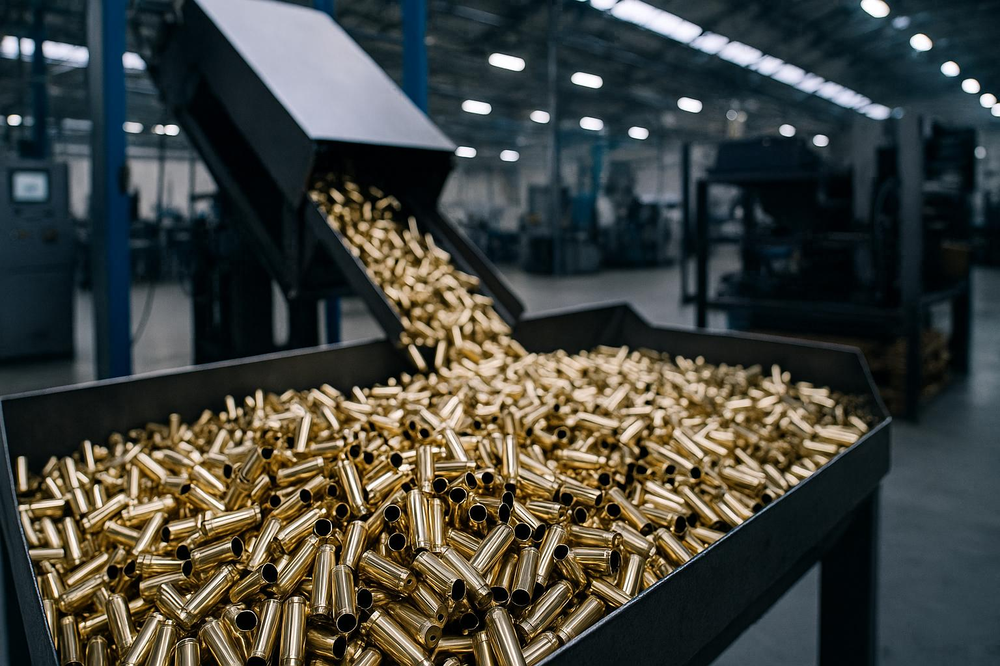

Intro

For decades, Portugal maintained a sovereign defense industrial capacity. Yet the closure of the country’s last munitions factory marked the dismantling of a critical pillar of strategic autonomy. The loss of domestic capabilities led to growing dependence on foreign suppliers, reducing national resilience in the face of geopolitical uncertainty and escalating security challenges.
Today, a global rethinking of security and supply chain resilience creates a timely and strategic opportunity—not only for Portugal, but for Europe and its allies. Portugal, with its stable governance, secure geography, and Atlantic-European positioning, is uniquely placed to contribute to a renewed defense-industrial ecosystem. Rebuilding this capacity through private initiative offers a path to strengthen national sovereignty, reinforce NATO and EU preparedness, and ensure that Portugal plays an active and reliable role in the collective response to emerging global threats.
Work
After several years of research, scenario evaluation, and strategic alignment, we are now advancing into the execution phase. Our team—bringing together industrial, defense, and financial expertise—has been working to identify critical capability gaps across European and allied defense systems. The current global context has made it clear: secure, sovereign supply chains are no longer optional. They are urgent.
We are now focused on establishing the first of four ambitious industrial phases: the launch of a light ammunition production facility in Portugal. This effort is backed by private capital and grounded in a clear strategic vision. Meetings with investors, industrial partners, and institutional stakeholders are underway to secure long-term alignment and value creation. This is not just a factory—it is the first building block of a renewed national and European defense industry, built on readiness, innovation, and trust.
About
For decades, Portugal maintained a sovereign defense industrial capacity. Yet the closure of the country’s last munitions factory marked the dismantling of a critical pillar of strategic autonomy. The loss of domestic capabilities led to growing dependence on foreign suppliers, reducing national resilience in the face of geopolitical uncertainty and escalating security challenges.
A team with proven international experience in the defense and industrial sectors is now mobilizing resources to lead a long-term investment strategy aimed at restoring Portugal’s defense industrial sovereignty. The goal is to rebuild a sustainable national industry that generates qualified employment, fosters innovation, and creates long-term economic value for the country.
The initiative is deeply committed to advancing technological development by working closely with Portuguese universities and research centers—driving innovation not only in industrial processes, but in new defense products and operational capabilities. Grounded in decades of individual expertise and global insight, this project positions Portugal to re-enter the defense value chain with credibility and ambition, in full cooperation with its strategic partners across Europe, the Atlantic, and beyond.
Today, a global rethinking of security and supply chain resilience creates a timely and strategic opportunity—not only for Portugal, but for Europe and its allies. Portugal, with its stable governance, secure geography, and Atlantic-European positioning, is uniquely placed to contribute to a renewed defense-industrial ecosystem. Rebuilding this capacity through private initiative offers a path to strengthen national sovereignty, reinforce NATO and EU preparedness, and ensure that Portugal plays an active and reliable role in the collective response to emerging global threats.
Contact